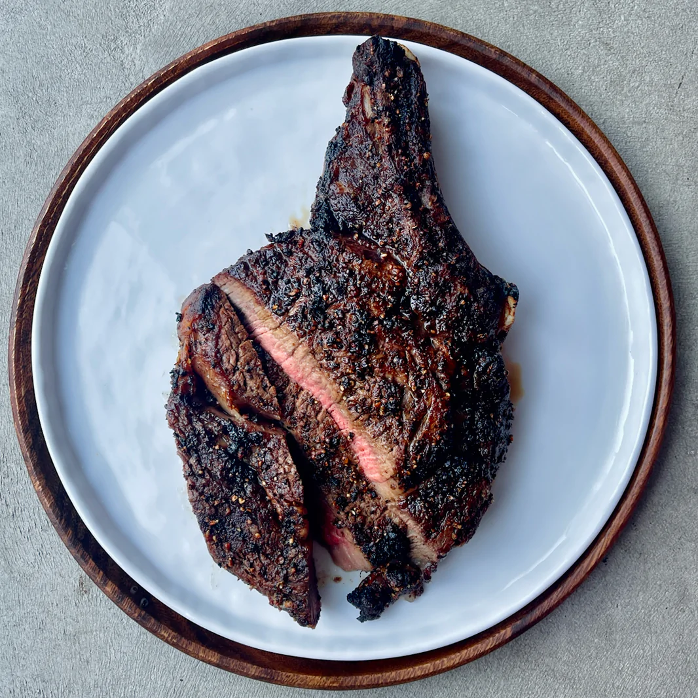

Description
The air fryer is an incredibly convenient kitchen tool for cooking steak. It makes the fat crispy and delicious. The best part is, the prep and cleanup time is virtually nil!
- Desired cut of steak (NY Strip, Ribeye, etc.)
- Salt (optional)
- Place steak in the airfryer
- Turn air fryer on
- Set temp to 400 degrees F
- Set time to 6 minutes and hit start
- After 6 minutes, flip the steak
- Set time to 6 minutes and hit start
- When finished, let it rest, salt to taste, and enjoy!
Back To All Recipes
Return To Top